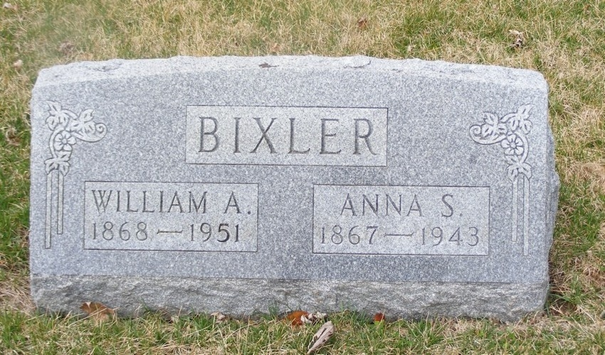
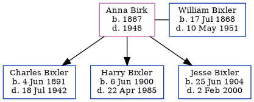

Anna S Bixler (née Birk) 1867 - 1948
[ Home ] | [ Calendar ] | [ Surnames Index ] | [ Errors ] | [ Family History ]Anna Birk, the wife of William Andrew Bixler (the third cousin three-times-removed on the mother's side of Nigel Horne), was born in Indiana, USA in 18671 and married William (with whom she had 3 children: Charles Edward, Harry Emerson and Jesse Clarence) in Allen, Indiana, USA on 25 Feb 18912.
During her life, she was living in Washington, Indiana on 15 Apr 19105; in Adams, Indiana, USA on 1 Jan 19201; in Fort Wayne, Indiana on 1 Apr 19303; and in Milford, Lagrange, Indiana on 1 Apr 19404.
She died in 1948 and was buried in Fort Wayne, Indiana after 1948.
Children
- Charles Edward was born on 4 Jun 1891
- Harry Emerson was born on 6 Jun 1900
- Jesse Clarence was born on 25 Jun 1904
Citations
- US Census 1920 - Findmypast (was age 52 and the wife of the head of the household)
- United States Marriages - Findmypast
- US Census 1930 - Findmypast (was age 62 and the wife of the head of the household)
- US Census 1940 - Findmypast (was age 72 and the wife of the head of the household)
- US Census 1910 - Findmypast (was age 42 and the wife of the head of the household)
Media
William Bixler - Anna - headstone

Anna Birk; Charles, Harry, William, Jesse Bixler

United States Marriages - FS/MAR/31737949/2
United States Marriages - R_1072328605/2
US Census 1930 - USC/1930/004950593/00231/006
US Census 1940 - USC/1940/1457898531
Family Tree
Map
Generated by ged2site. Last updated on Jul 3, 2024
Known Issues
Death date (1948) has no citations
Burial place (Fort Wayne, Allen, Indiana, USA) has no citations
No records of living with anyone
Adding date of burial as 'aft 1948'
Date of death is known, but not place